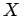
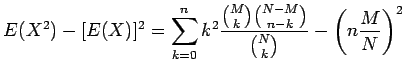

Inhalt Index DeskTop Bronstein

 Wahrscheinlichkeitsrechnung und Mathematische Statistik Wahrscheinlichkeitsrechnung Diskrete Verteilungen
Wahrscheinlichkeitsrechnung und Mathematische Statistik Wahrscheinlichkeitsrechnung Diskrete Verteilungen


Wie bei der Betrachtung der Binomialverteilung liege eine zweistufige Grundgesamtheit mit zwei Klassen von Elementen vor, von denen die eine Klasse M Elemente mit der Eigenschaft A enthält, die andere N - M Elemente, die die Eigenschaft A nicht besitzen. Im Unterschied zu dem auf die Binomialverteilung führenden Fall mit Zurücklegen der gezogenen Kugeln des Urnenmodells wird jetzt der Fall ohne Zurücklegen betrachtet.
Die Wahrscheinlichkeit dafür, daß sich unter n gezogenen Kugeln k schwarze befinden, ist durch
mit
| (16.66b) |
gegeben. Die Wahrscheinlichkeiten p und q berechnet man gemäß (16.62).
Eine Zufallsgröße , die der Verteilung (16.66a) genügt, heißt hypergeometrisch verteilt.
| (16.67a) |
| = |  | ||
| = | (16.67b) |
| (16.67c) |
In der folgenden Abbildung sind drei hypergeometrische Verteilungen für die Fälle und 10 für n = 5 dargestellt, was den Fällen und 0,1 der sich anschließenden Abbidung zur Binomialverteilung entspricht.
In diesen Beispielen sind keine signifikanten Unterschiede zwischen Binomial- und hypergeometrischer Verteilung zu erkennen.